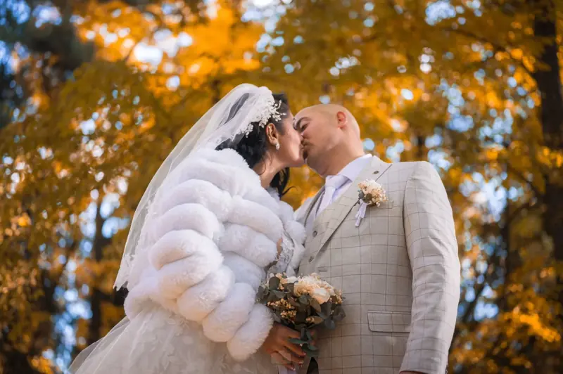
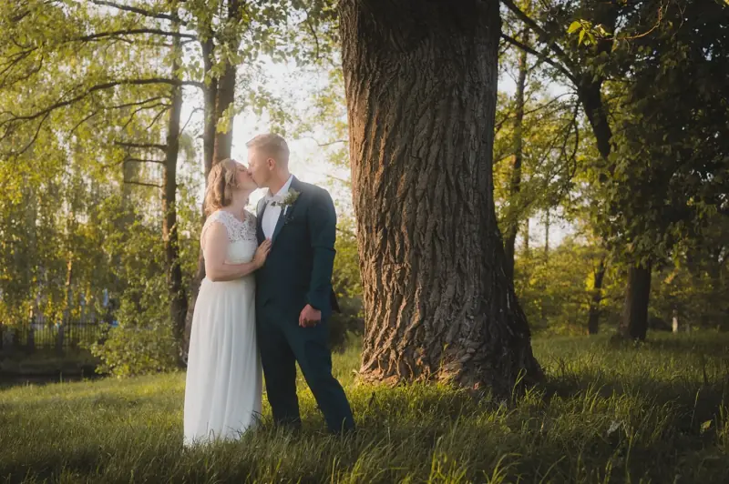
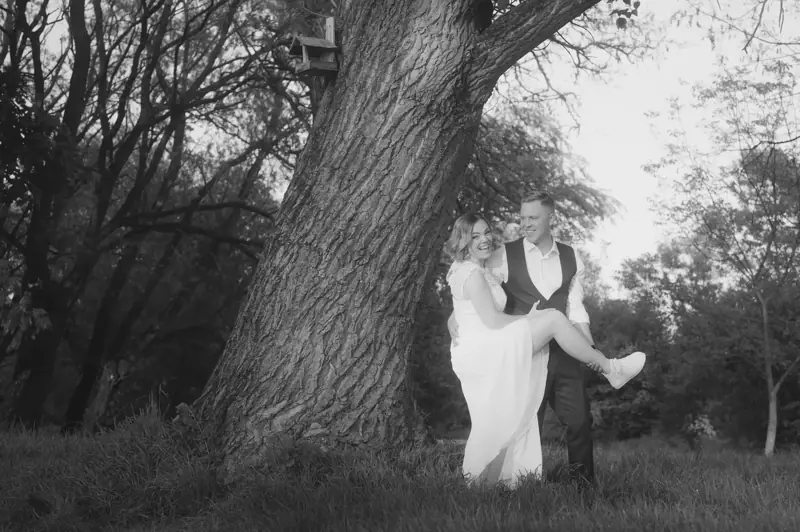
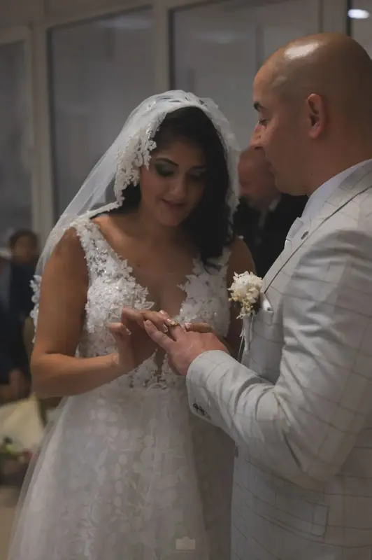
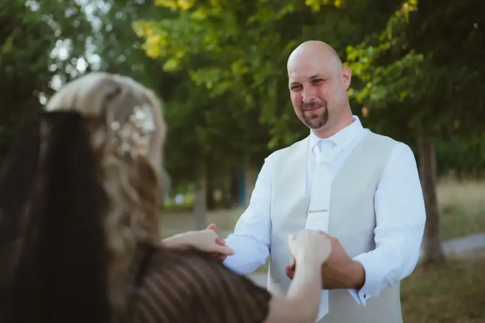
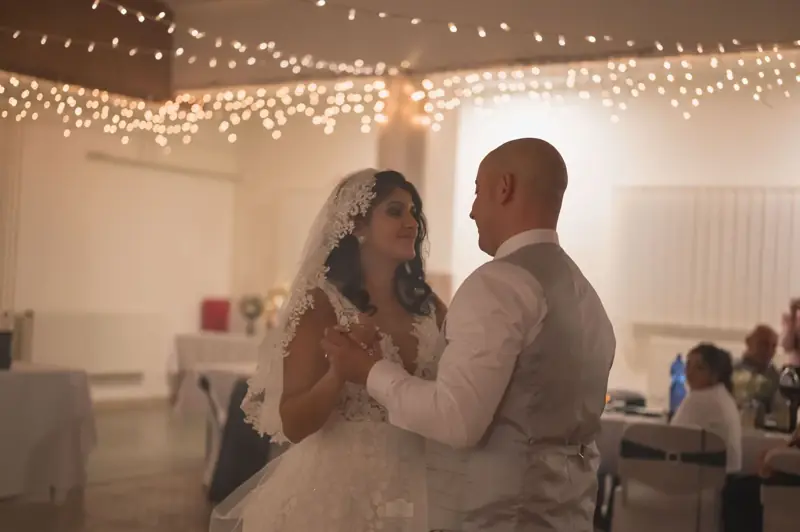

Svadobný fotograf a kameraman v Bojniciach
Bojnice sú len pár minút od môjho štúdia v Prievidzi, takže na vašu svadbu, rodinné fotenie alebo akciu prídem rýchlo a bez zložitej logistiky.
- 50+ fotení a natáčaní
- 24 h odpoveď na každú správu
- 2 kolá úprav v cene






Foto a video v Bojniciach
Zámok, kúpeľný park a lesy nad mestom dávajú Bojniciam atmosféru, ktorú netreba nijako prikrášľovať. Na svadbe sa preto sústredím na vás dvoch, vašich blízkych a skutočné emócie. Pózy nechávam bokom a kulisu nechám pracovať za nás.
Ak sa sobášite v Bojniciach, na portréty páru si spolu vyberieme miesto v pešej vzdialenosti, aby ste od hostí neodbiehali na dlho. Ideálne v poslednej hodine pred západom slnka, keď je svetlo najmäkšie.
Kde sa v Bojniciach pekne fotí
- Bojnický zámok a zámocký parkromantické portréty páru s rozprávkovou kulisou
- Kúpeľný parktieň stromov a pokojné chodníky aj na poludnie
- Lesy a vyhliadky nad mestomprirodzené svetlo a súkromie pre portréty vo dvojici
- Námestie a staré uličkymestské zábery a spontánne momenty s hosťami
Ceny
- Svadobný filmod €600
- Svadobné fotenie, celý deňod €550
- Balík foto a video (Eternal Frame)od €990
- Aftermovie z akcieod €400
- Fotenie akcie (4 h)€350
- Hudobný videoklipod €500
- Portrétne fotenie (1 h)€150
Presnú cenu vám pošlem po krátkej konzultácii. Termín rezervujem po zaplatení 50 % zálohy. Celý cenník a kalkulačku nájdete na hlavnej stránke.
Časté otázky
Účtujete do Bojníc cestovné?
Bojnice sú hneď vedľa Prievidze, kde mám štúdio. Ak by pri väčšej zákazke bolo treba počítať s cestovným, uvidíte ho vopred v ponuke.
Kedy je v Bojniciach najlepšie svetlo na portréty?
V poslednej hodine pred západom slnka. Presný čas pre váš dátum vám pošlem spolu s ponukou, aby ste ho mohli zapracovať do harmonogramu.
Dá sa fotiť aj pri zámku?
Pri zámku a v zámockom parku sa fotí často. Ak by si konkrétne miesto vyžadovalo povolenie, preveríme to spolu vopred.
Plánujete niečo v Bojniciach?
Napíšte mi dátum a miesto. Do 24 hodín vám pošlem návrh a cenu.